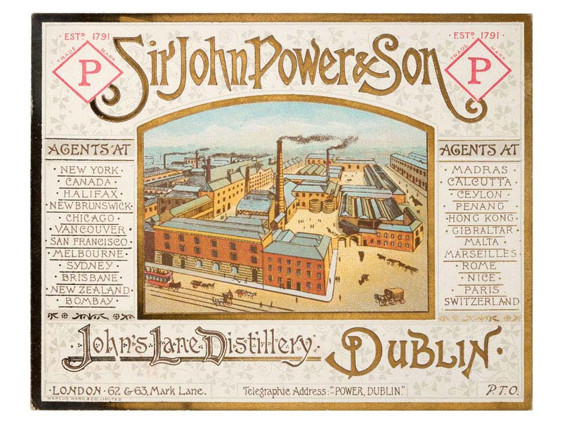

Another report by The Institution of Mechanical Engineers from a series of visits to Irish manufacturers....
1888 Institution of Mechanical Engineers: Visits to Works
The Institute of Mechanical Engineers
A Tour of John Power & Son
“The Engineer, Vol.LXVI, July-December, 1888”JOHN’S LANE DISTILLERY.
The distillery, belonging to Messrs. John Power and Son, is one of the old Dublin distilleries celebrated for the manufacture of “Dublin pot stillwhiskey,” and was established in 1791. The entire works have practically been rebuilt and refitted during the past ten years. They cover about eight acres, and reach from Thomas-street to the quays.
The annual output is about 900,000 gallons; there are from 250 to 300 hands employed, and the daily consumption of coal is from 50 to 60 tons. There are five engines, two of which are McNaught compound condensing beam engines, one of 400, the other of 250 indicated horse-power. Both of these are by Messrs. Turnbull, Grant, and Jack, of Glasgow. The larger one is in the mill engine room, the smaller one in the mash house engine-room. The beam of the latter is of steel, and the engine is provided with a grooved pulley, from which power is taken by means of ropes. These ropes have been working night and day for three years without renewal, and are still in good order. The base of the larger McNaught engine is a single casting of seven or eight tons weight. A horizontal engine by Stephen and Bailey has been put down for the new workshops. It is a single cylinder engine, of good workmanship, and will give about 75 indicated horse-power, the steam pressure being 80 lb.Some new mechanical workshops are in course of construction. The roof and upper shop are carried on metal columns, 30ft. long, cast by Messrs. Ross and Walpole, Dublin. The lower shop will be used as a smithy, copper hearth, a fitting and turning shop. The upper storey will be appropriated for wood-working machinery and general joinery. The corn stores consist of five extensive floors, and contain usually 30,000 to 40,000 barrels of grain in the working season, which is from September to June. All the elevators are constructed of cast iron plates, as not to carry or spread fire, and they can be easily opened at any place. In the upper rooms the grain is laid out for seasoning and drying. It is subsequently fire dried by kilns, which are provided with perforated metal floors upon which the grain is spread out. The grain used for the manufacture of whiskey is a mixture of wheat, barley, oats, and malt. The barley and oats appear to be of sue in making the mass more open or porous. After drying, the grain is passed through the cleaning machines. A magnetic separator is used for particles of iron. The screening machines themselves are by Vangelder and Apsimon. The larger materials separated from the grain form a curious collection of boot-tips, nails, screws, pieces of brick, stone, &c., all of which ingredients are superfluous as far as the production of Irish whiskey is concerned. Leaving the screening machines, the visitor admires the huge exhaust fans by Schiele, and passes on into the mill, where the grain is reduced to powder. Here there are seven pairs of millstones 4ft. 10in. in diameter. They consist of granite bosses, with outside segments of French burr, all set in and backed with plaster of Paris. There are in addition rollers 3ft. by 18in. 150 to 200 bushels of malt are crushed per hour by the milling machinery. The crushed grain is lifted to the hopper loft, whence it is allowed to descend into one or other of the great mash-tuns in the brew- house. These are 7½ ft. deep; one is 32ft. in diameter, the other 35ft. They hold about 500 barrels each. The grain is stirred up during the mashing operation by rotating rakes, and is saturated with hot water. The “wort” here produced passes down through the perforated cast iron base to the metal “under-backs.” The weaker liquor is returned next day to the mash-tun. The wort passes to the coppers, which consist of four large oval copper vessels, wherein the wort is heated with water and mixed up by a mechanical stirrer. Large copper pipes run round the coppers, containing cold water to regulate the temperature. The capacity of each vessel is 15,000 gallons. The worts next pass over the refrigerators, which are copper pipes through which cold water circulates, on their way to the fermenting vats. There are nine fermenting wash-backs, each capable of holding one brewing, or 36,000 gallons. The liquor spends some three or four days in the fermenting tuns, where the mystic transmutation takes place, and whence it staggers on in an alcoholic condition to the still-house. Here there are six pot-stills, capable of holding from 15,000 to 25,000 gallons each. In these the potent vapours are distilled off by heat from the watery mixture, to be condensed in the worms close by. The worm-tubs are huge cylinders of wrought iron, 40ft. or so in height, containing within a copper coil or worm. A constant stream of water rises through the worm-tub, and is led off at the top for the purpose or working the hydraulic hoist. The ram for the latter, which is 22in. in diameter and 29ft. long, is situated more than 100ft. Below the surface of the worm-tub. The hydraulic apparatus is by Ross and Walpole, of Dublin. The products of distillation are run down to the can pit or sampling-room, where they are tested. The first product, or “low wines,” has to be treated over again to form “feints,” and a third time to produce “spirits,” about which there is no guide. An automatic register in the can-room enables the Excise officers to ascertain the quantity of liquid temptation which has passed through. There are seventeen distillery bonded warehouses, and two outlying warehouses, one under the market building in George-street, and the other under Westland-row railway station; they are capable of holding in all up to 40,000 casks, having a total capacity of 1,113,000 cubic feet. No reflective person could contemplate these vast stores of power without moralising on the hogsheads of eloquence, of valour, and of resignation that are potentially pent up within their walls. The distillery, being built on the side of a hill, has the advantage of natural gravitation for the movement of the material in process of manufacture. The stables are built of enameled brick, and furnished with Musgrave’s fittings.
The visitors were very well pleased with the distillery, its mechanical
arrangements, and the final product.
They were conducted over the premises by Sir J. T. Power, Alderman
Kennedy, Messrs. Procter, Whitley, and other members of the staff.
Considerable interest was taken in the establishment because of its reputed national importance, few, perhaps, of the visitors being aware that
Guinness’s black beer is, on account of financial considerations, the general, if not the exclusive, beverage of the poorer classes.
- 
- img027.jpg (106.27 KiB) Viewed 94 times

-id=1107.jpg)
-id=1108.jpg)
-id=1109.jpg)
-id=1110.jpg)

-id=1112.jpg)
-id=1125.jpg)